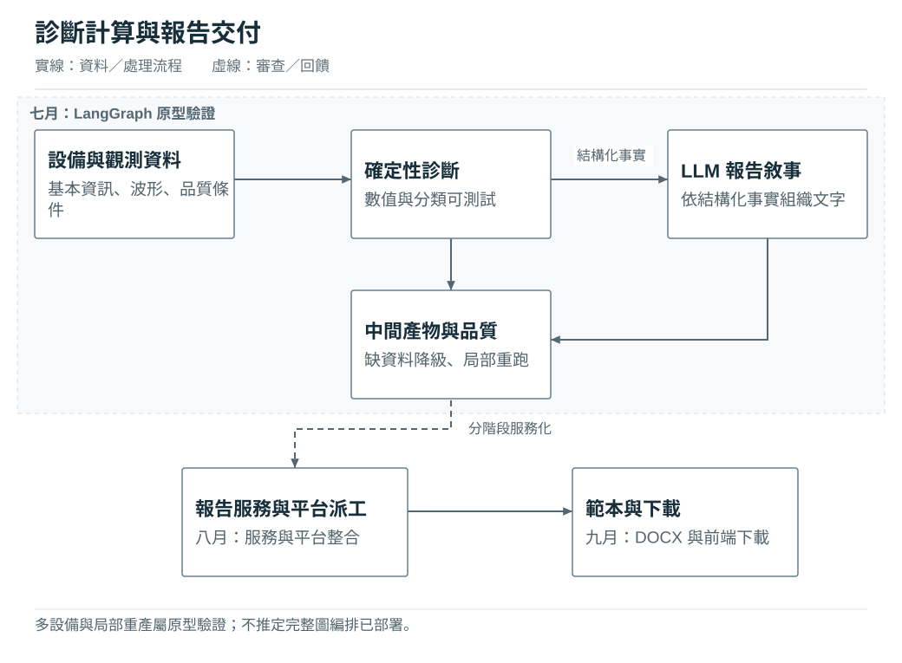

情境與目標
診斷報告需轉成能排程、重跑及下載的服務，保留數值依據及缺資料時的處理。
- 客戶分析：先用 notebook 核對資料、運轉狀態及診斷，再交付分析報告。
- 可重用流程：以 skills 固定分析步驟、品質檢查與內外部報告轉換。
- 原型驗證：用 LangGraph 檢查多設備、指定段落重新產生與缺資料降級。
- 平台整合：完成報告服務、平台派工、DOCX 及前端下載；現場完整流程另驗。
系統架構與流程
架構說明
- 輸入
- 設備基本資訊、觀測資料與診斷結果。
- 處理方式
- 可測試節點計算數值與分類，LLM組織文字；節點保存輸入輸出及降級條件。
- 產出
- 報告服務、平台派工、DOCX與下載；中間產物用來回查結論。
流程圖

更多技術細節
保留中間產物與失敗處理
七月原型保留既有分析腳本與品質規則，將穩定步驟轉為 LangGraph 節點。多設備各自保存狀態，審查後可重生有問題的部分；資料不足時明確降級。這些能力的原型驗證與現場完整流程分開記錄。
把客戶觀察轉為可檢驗問題
面對負載與振動的現場觀察，重新分層分析並交付說明材料。統計關聯與設備根因分開表達，需要現場補驗的部分清楚列出。
成果與驗證範圍
實際產出
交付客戶分析報告，建立可重用的分析流程並整合平台報告服務。多設備處理與指定段落重新產生已在原型中驗證，現場完整流程及正式驗收仍待確認。
驗證與限制
多設備及指定段落重新產生以原型驗證為範圍；平台整合、現場部署與驗收各自追蹤。